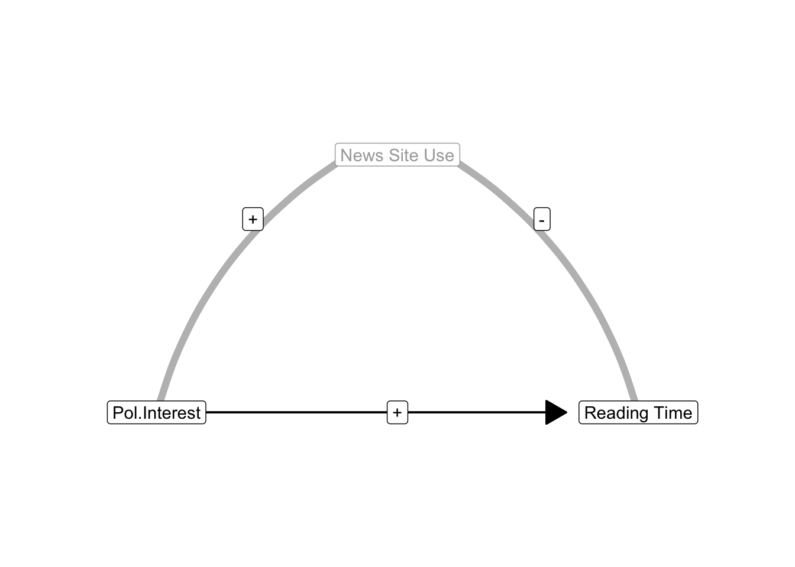
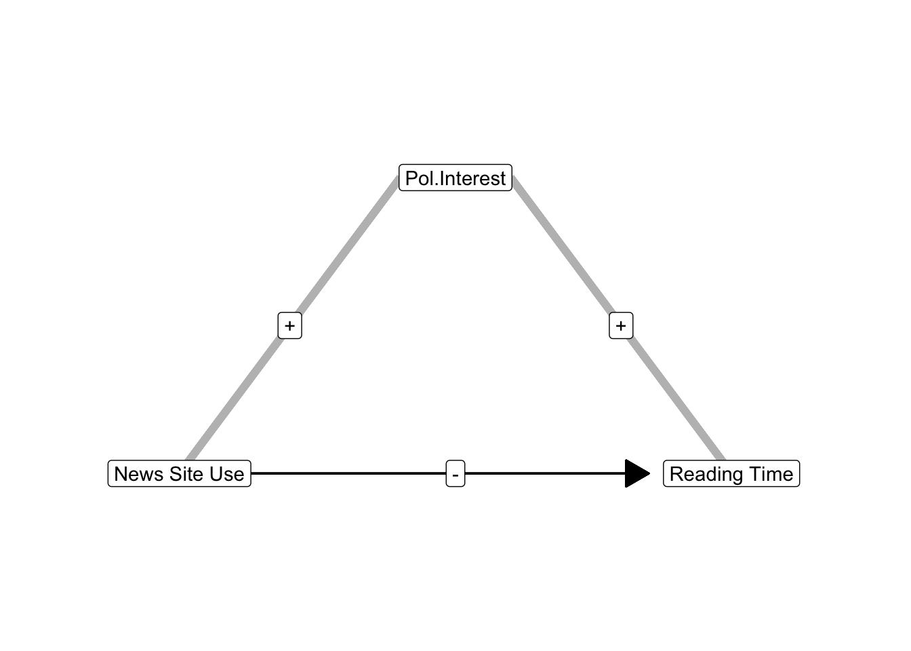
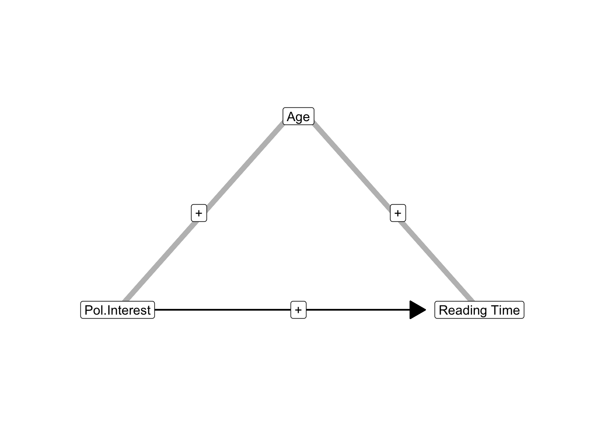
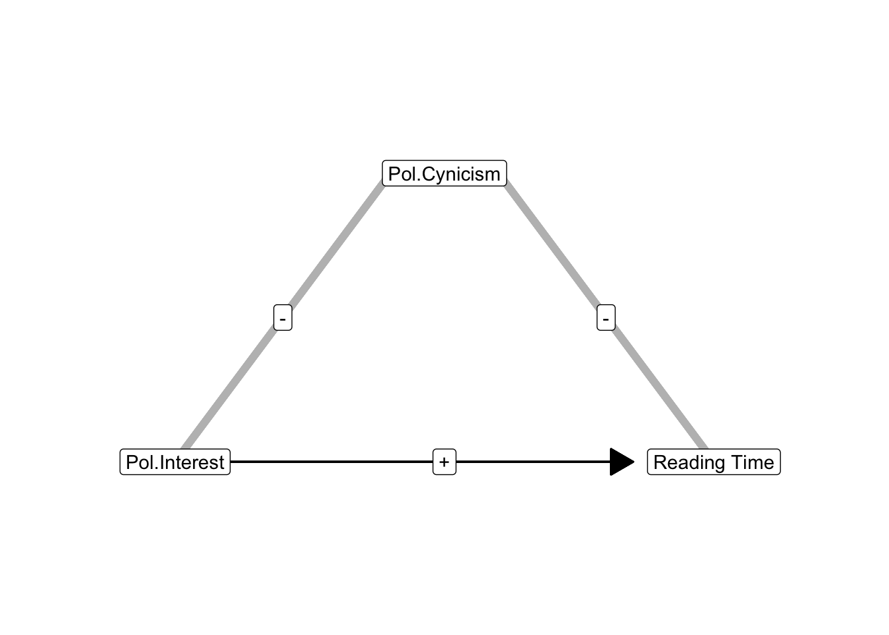
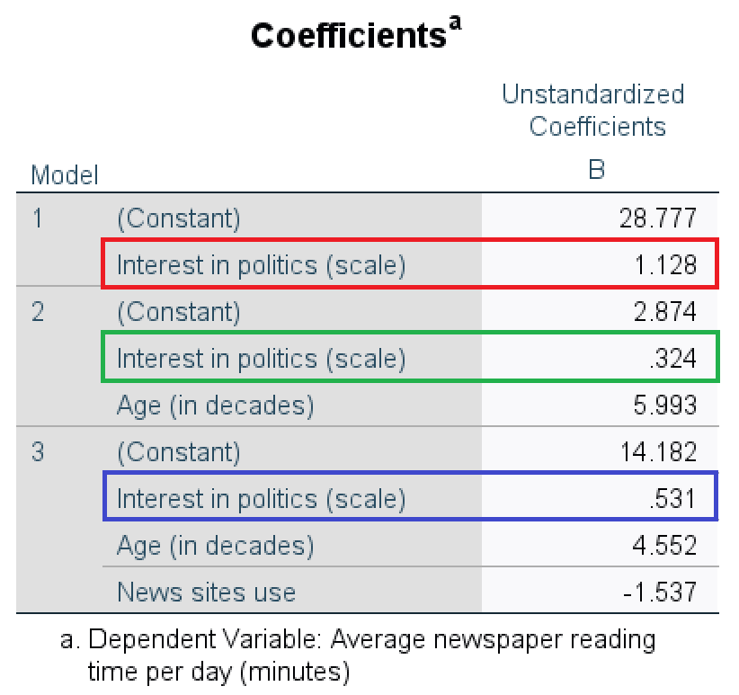

8 Regression Analysis And Confounders
Key concepts: partial effect, statistically controlling for effects of other predictors, indirect correlation, confounders, suppression and suppressor, spuriousness and reinforcer.
Watch this micro lecture on confounders for an overview of the chapter (Video 8.1).
Summary
What happens if I use more than one predictor in a regression model? And do variables matter that are not in the regression model?
If we analyze the effects of two or more predictors on a dependent variable in a regression model, the effect of a predictor is adjusted for the effects of other predictors. Each predictor only predicts the part of the scores on the dependent variable that cannot be predicted by the other predictors. If we predict newspaper reading time, for example, from age and interest in politics, age predicts the part of newspaper reading time that interest in politics cannot predict.
Because the effects of predictors are adjusted for the effects of other predictors, the effects of predictors may change if a new predictor is added to a regression model. The effects can become stronger (the new variable was a suppressor) or weaker and even change direction (the new variable was a reinforcer). For example, adding respondents’ news site use to the regression model predicting newspaper reading time from age may change the effect of age on newspaper reading time.
Indirect correlations play a central role here: the correlation between a predictor (age) and the dependent variable (newspaper reading time) due to a third variable (news site use) that is correlated both with the predictor and the dependent variable. The size of the indirect correlation is the product of the correlation between the predictor (age) and third variable (news site use) and the correlation between the third variable (news site use) and the dependent variable (newspaper reading time).
8.1 Controlling for Effects of Other Predictors
In a regression model, we use the variation in scores on independent variables to predict the variation of scores on the dependent variable: Does a person with a higher score on an independent variable also have a higher score or, on the contrary, a lower score on the dependent variable? A simple regression model contains only one independent variable but a multiple regression model includes more than one.
For example, European citizens who are more interested in politics spend more time on reading newspapers and so do citizens who are older. We have two independent variables (interest in politics and age) to predict the dependent variable (newspaper reading time). The two independent variables can be correlated: Older citizens tend to be more interested in politics. How does the regression model decide which independent variable is responsible for which part of the variation in the dependent variable?
8.1.1 Partial effect
How does a multiple regression model control the effect of an independent variable for the effects of all other independent variables? Conceptually, the regression model first removes the variation in the dependent variable that is predicted by all other independent variables. Then it determines how well the remaining independent variable predicts the variation that is left (residual variation). This is the variation in outcome scores that can be predicted by this particular independent variable but not by any of the other independent variables in the model.
In this sense, a regression coefficient in a multiple regression model expresses the unique contribution of a variable to the prediction of the dependent variable. It is the contribution to the prediction of the dependent variable over and above the predictions that we can make with all other independent variables in the model. This is called a partial effect. This is what we mean if we say that we are controlling for all other independent variables in our interpretation of a regression model.
8.1.2 Confounding variables
It is important to note that the effect is only unique in comparison to the other independent variables that are included in the model. It may well be that we did not include variables in the model that are actually responsible for part of the effects that are attributed to the independent variables in the model. Such left-out variables are called confounding variables or, for short, confounders.
If we include a confounder as a new independent variable in the model, the partial effects of other independent variables in the model change. In Figure 8.1, for instance, this happens if you add news site use to a model containing age as a predictor for newspaper reading time. The effects of other independent variables are adjusted to a new situation, namely a situation with news site use as a new independent variable. News site use helps to predict variation in the dependent variable, so the variation left to be explained by age changes. In Section 8.3, we will learn that regression coefficients can increase and decrease if confounders are included in the model.
If we want to interpret regression coefficients as causal effects, for example, whether news site use causes people to spend less time on reading newspapers, we must ensure that there are no important confounders. We will discuss this in Chapter 9 (Section 9.1.1).
8.1.2.1 Confounders are not included in the regression model
Finally, it is important to remember that a confounder, such as age in the present example, is a variable that is not included in our regression model. As long as it is not included, the indirect correlation between predictor (political interest) and outcome (newspaper reading time) due to the confounder (age) is not controlled for when the effect of the predictor is estimated. The estimated effect is confused (confounded) with the effect of the confounder.
Once the confounder (age) is added to the regression model, however, the estimated effects are controlling for the variable formerly known as a confounder. The effects no longer partly represent the effect of the former confounder. In other words, they are no longer confounded by the effect of that variable. The former confounding variable now is a predictor or, if we are not interested in its effects, a covariate or control variable in the regression model.
8.2 Indirect Correlation
When is a variable a confounder and when does it change the effect of another predictor a lot if it is added to the regression model? The answer to the first part of this question is easy: A confounder is a variable that is correlated with both the predictor and dependent variable but is not (yet) included in the regression model. Because of the correlations, a confounder establishes an indirect correlation between the predictor and dependent variable.
A confounder is a variable that is correlated with both the predictor and dependent variable but is not included in the regression model.
The size of the indirect correlation equals the product of the correlation between confounder and predictor and the correlation between confounder and dependent variable. In Figure 8.2, the correlation between age and political interest is .12 and the correlation between age and newspaper reading time is .88, the indirect correlation between interest in politics and reading time established by age is .12 * .88 = .11.
8.2.1 Indirect correlation and size of confounding
In Figure 8.2, we start with a simple regression model with political interest as the only predictor of newspaper reading time. Respondent’s age, however, is correlated both with political interest (\(r\) = 0.12) and with newspaper reading time (\(r\) = 0.88). Age creates a positive indirect correlation between political interest and reading time.
As long as age is not included in the regression model, the model believes that the indirect correlation due to age is part of the effect of political interest. It assigns the indirect correlation due to age to the effect of political interest, that is, it includes the indirect correlation in the regression coefficient of political interest. In this situation, the regression coefficient for political interest expresses both the effect of political interest itself and the effect of age (the confounder).
Once we add age as a new predictor to the regression model, the indirect correlation due to age is removed from the effect of political interest. The effect of age on newspaper reading time is now correctly assigned to age. As a result, the value of the regression coefficient for political interest changes if we add age as a new predictor.
The size of the change is related to the size of the indirect correlation. The larger the indirect correlation, the more the regression coefficient of political interest changes if age (the former confounder) is included as a new predictor. This answers the second part of the question with which we started Section 8.2: When is a variable a stronger confounder?
If you love the details: The size of the change in the standardized regression coefficient is not exactly the same as the size of the indirect correlation. It is equal to the correlation between the confounder (age) and the predictor (political interest) times the standardized regression coefficient of the effect of the confounder (age) on the dependent variable (newspaper reading time) that controls for the effect of the predictor (political interest).
8.2.2 Randomization for avoiding confounders
There is a very important way to minimize the chance of having any confounders at all, namely, randomization in an experiment. Remember the example of Chapter 5, where participants saw a video clip with Angelina Jolie, George Clooney, or no celebrity endorsing a charity. The video clip with or without a celebrity endorser is the experimental treatment here. If we let chance decide which video clip a participant sees, we randomize the experimental treatment.
How does this help us to avoid having confounders? The example research aimed to find out whether the celebrity endorser affects the willingness to donate to a charity. The experimental treatment (celebrity endorser video) is the independent variable or predictor variable in the model. If participants’ scores on this variable — in the example, seeing Jolie, Clooney, or no celebrity endorser — are random, the variable is expected not to correlate with any other characteristic of the participants when the experiment starts.
For example, female and male participants would have the same chance to see Jolie, Clooney, or no endorser. We expect one third of all females and one third of all males to see Jolie, to see Clooney, and to see no endorser. If there is no systematic difference between females and males in this respect, participant’s experimental treatment is not correlated with sex of the participant. The same reasoning applies to every other characteristic of the participant at the start of the experiment: age, hair colour, favourite movie star, and so on. We expect that all of these participant characteristics are not correlated with the experimental treatment variable.
Let us now turn to the definition of a confounder: A confounder is a variable that is correlated with both the predictor and dependent variable but is not included in the regression model. A confounder must be correlated with the predictor, which is the experimental treatment here. Thanks to experimental randomization, we expect that all participant characteristics that are not included in the experiment do not meet this criterion. There should not be any confounders!
We have learned about probabilities and expectations in previous chapters. These principles also apply to experimental randomization. Even if we may expect to have equal numbers of females and males seeing Angelina Jolie in our example experiment, we can end up with more females than males seeing Jolie in our experiment due to chance. In this situation, the experimental treatment variable is correlated with the sex of the participant, so participant sex is a confounder if it is also correlated with the dependent variable (willingness to donate) and not included in the analysis. Experimental randomization does not guarantee that there are no confounders but it is our best instrument to minimize the chance of having confounders.
8.3 Two Types of Confounders
In the preceding section, we learned that a partial effect expressed by a regression coefficient may change if a new predictor is added to the regression model. The partial effect of a predictor changes if the added variable is a confounder: It is correlated both with the predictor and dependent variable. In other words, there is an indirect correlation between the predictor and dependent variable due to the confounding variable.
The partial effect of a predictor can become stronger, weaker, or even change direction if we add a confounder to the regression model. The following sections describe the two types of confounders that are responsible for these changes: suppressors and reinforcers.
8.3.1 Suppression
A predictor’s effect becomes stronger (more strongly positive or more strongly negative) if we include a confounding variable that is responsible for an indirect correlation that points in the opposite direction of the effect of the predictor in the model without the confounder. Here, the indirect correlation contradicts the effect of the predictor and as a result, the effect of the predictor is underestimated (suppressed) if the confounder is not included in the model. The confounder is a suppressor variable. If we add it to the model, it no longer suppresses the effect of the predictor, so this effect becomes stronger.
There are two situations in which an indirect correlation can have the opposite sign of the effect of a predictor:
The indirect correlation is negative but the effect of the predictor is positive.
The indirect correlation is positive but the effect of the predictor is negative.
We start with the first situation and discuss the second situation later on in this section.
Let us assume that political interest has a positive effect on reading newspapers. People who are more interested in politics tend to spend more time on reading newspapers than people who are less interested in politics. The use of news sites confounds this effect if it is correlated with both political interest and newspaper reading time. What happens if people interested in politics use news sites more often (positive correlation) because they offer the latest political news but using news sites decreases newspaper reading time (negative correlation) because most of the political information has already been provided by the news sites?
In this situation, the indirect correlation between political interest and newspaper reading time due to news site use is negative: Positive times negative yields a negative. The indirect correlation tells us that people interested in politics use news sites more frequently but people who frequently use news sites read newspapers less often. The indirect correlation clearly contradicts the regression effect of political interest on newspaper reading time, which is positive: People who are more interested in politics spend more time on reading newspapers.
If news site use is not included in the regression model, the standardized regression effect of political interest more or less adds the indirect correlation to the effect of political interest. Adding a negative amount (indirect correlation), however, is equal to subtracting this amount from the standardized regression coefficient. The positive effect of political interest on reading time is underestimated. In this example, the effect of political interest is suppressed (masked) by the confounder news site use. News site use is a suppressor variable.
If we include this suppressor variable (news site use) in our regression model, we eliminate its suppression of the effect of political interest on newspaper reading time. The negative effect of news site use on reading time is now captured by the regression coefficient for the news site use predictor. The effect of political interest on newspaper reading time is now controlled for the effect of news site use; it no longer includes the indirect correlation due to news site use. In this example, the effect of political interest on newspaper reading time becomes more strongly positive.

Now, let us have a look at the situation in which the indirect correlation is positive but the regression effect of the predictor is negative. Just reverse the example and make news site use the predictor and political interest the confounder. The regression effect of news site use on newspaper reading time is negative if people tend to use news sites instead of newspapers as sources of information. The indirect correlation due to political interest, however, is positive if politically interested people use news sites more and spend more time on reading newspapers. In this scenario, the negative effect of news site use on newspaper reading is underestimated if we do not control for political interest.
A variable is a suppressor (1) if it is not included in the regression model and (2) it establishes an indirect correlation between predictor and dependent variable that has the opposite sign of the current effect of the predictor on the dependent variable.
Suppression can have surprising effects. If the predictor’s original effect was close to zero, adding a suppressor variable to the model will strengthen the effect. An effect that we initially believed to be absent may turn out to be substantial and statistically significant. If our regression model tells us that our predictor does not have an effect, we cannot rule out that it does have an effect that is suppressed by a suppressor variable.
In addition, indirect correlations due to other predictors can add so much to the original partial effect of a predictor that the standardized regression coefficient becomes higher than 1 or lower than -1. This illustrates that standardized regression coefficients are not correlations in multiple regression models because correlations can never be higher than 1 or lower than -1. In contrast, the standardized regression coefficient in a simple regression model is equal to the correlation between predictor and outcome. This is an important difference between simple and multiple regression models.
8.3.2 Reinforcement and spuriousness
Adding a new predictor to a regression model may weaken the effects of other predictors or even change the direction of effects. This happens if the indirect correlation due to a confounder has the same direction (sign) as the regression effect of the predictor in the model without the confounder. Either the indirect correlation and regression effect are both positive or they are both negative.
In both situations, regression effects are initially overestimated because the predictors cover part of the effect of an important variable that has not yet been added to the regression model. The part of the effect that is due to the confounding variable is called spurious. The confounding variable is called a reinforcer because it makes an effect appear more strongly positive or more strongly negative than it really is as long as the confounder has not been added to the regression model.

As an example, the effect of political interest on newspaper reading time may include the effect of age on newspaper reading when age is not (yet) included in the regression model. If older people are more interested in politics and do more newspaper reading, age creates a positive indirect correlation between political interest and newspaper reading.
If age is not included as a predictor in the regression model, the indirect correlation is attributed to the effect of interest in politics. The estimated effect is too strong. Once we include age as a predictor, the effect of political interest is cleansed of the age effect, so the effect size decreases.
In Figure 8.6, age is positively correlated with both political interest and newspaper reading. But a confounder that is negatively correlated with predictor and outcome has the same impact as a confounder that is positively correlated with predictor and outcome. Political cynicism, for instance, can be negatively correlated with both interest in politics and newspaper reading time (Figure 8.7). People who are less cynical about politics are more interested in politics and spend more time on reading newspapers. As a result, it looks like political interest strongly increases newspaper reading time but higher newspaper reading time is at least partly due to less political cynicism. Similar scenarios are available if the regression effect and the indirect correlation are negative.

As with suppression, spuriousness can have surprising results. It may happen that the entire estimated effect of a predictor is spurious. Adding a reinforcer variable to the regression model may make the entire effect of a predictor disappear. In other words, an effect that we initially thought was substantial may turn out to be too weak to be of interest.
Actually, the indirect correlation between a predictor and dependent variable due to a confounding variable can be so strong that a positive effect in a model without the confounder changes into a negative effect in a model that includes the variable. Adding the reinforcer to the model, the effect of the predictor not only moves towards zero (becoming weaker), but it moves beyond zero into a negative effect. It may even move so far beyond zero that the new negative effect is stronger than the reinforced positive effect.
The opposite may happen as well: An initially negative effect may become positive if a strong reinforcer variable is added to the model. This would be the case if the indirect correlation between political interest and newspaper reading time via news site use is strongly negative, resulting in a negative effect of political interest on reading time if news site use is left out of the model. Adding news site use to the model may then result in a positive effect of political interest.
A variable is a reinforcer (1) if it is not included in the regression model and (2) it establishes an indirect correlation between predictor and dependent variable that has the same sign as the current effect of the predictor on the dependent variable.
To summarize the two types of confounders:
If we add a suppressor to the model, the suppressed effect moves away from zero because suppression disappears. A positive effect becomes more strongly positive, a negative effect becomes more strongly negative.
If we add a reinforcer to the model, the reinforced effect moves towards the opposite side because reinforcement disappears. A positive effect becomes less strongly positive or even negative and a negative effect becomes less strongly negative or even positive.
8.4 Comparing Regression Models in SPSS
Essential Analytics
We can detect confounders by adding each independent variable as a separate Block in a linear regression model (the Linear option in the Regression submenu). The SPSS output estimates a regression model for each block (Figure 8.8).

In the first model, interest in politics is the only predictor. One additional unit of interest in politics adds 1.13 to the predicted newspaper time per day (Figure 8.8, red box). If age is added as a predictor in the second model, the effect of interest in politics decreases from 1.13 to 0.32 (Figure 8.8, green box). Age reinforced the effect of interest in politics in the first model. The third model adds the predictor variable news site use. Now, the effect of interest in politics increases from 0.32 to 0.53 (Figure 8.8, blue box); news site use suppressed the effect of interest in politics in the second model.
8.4.1 Instructions
8.5 Take-Home Points
In a multiple regression model, a regression coefficient represents the (predictive) effect of a variable while controlling for the effects of all other predictors. It is called a partial effect: It predicts variance of the dependent variable that cannot be predicted by the other predictors.
If a new predictor is added to a regression model, the regression coefficient of an old predictor changes if the new predictor is correlated with both the old predictor and the dependent variable. If the old predictor’s effect becomes stronger, the new predictor was a suppressor. If it becomes weaker (the old effect was—partially—spurious) or changes direction (sign), the new predictor was a reinforcer.
Random assignment of participants to experimental treatments (the independent variable/predictor in an experiment) is meant to create (near) zero correlations between the predictor and any other variable not included in the experiment. As a result, we expect that there are no confounders.